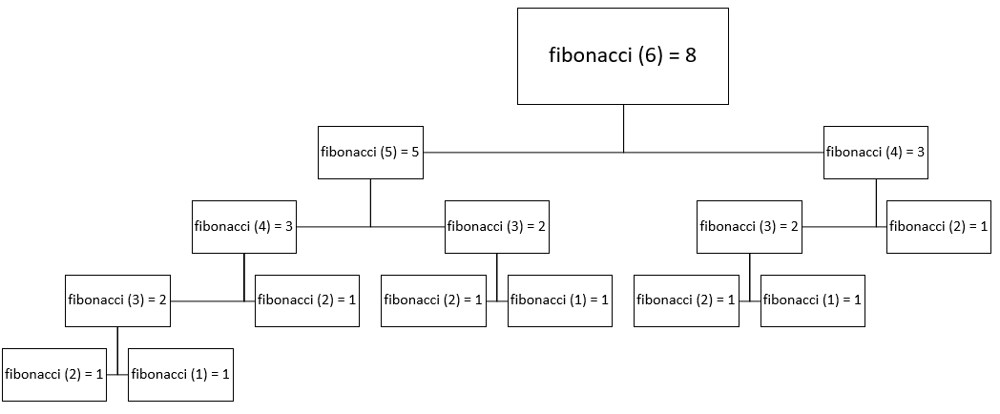
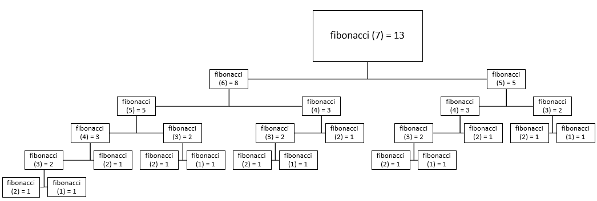

In programming terms, recursion is occurs when a function
The Russian nesting doll is a good example of recursion in real life, as every time you open a doll, it contains a smaller one. This process repeats until you reach the final doll which can’t be opened any further. In this case, the base case would occur when the size of the dolls reaches its smallest case.
You can use recursion when the issue at hand meets three pieces of criteria:
In the following examples, we'll be taking a look at factorial and fibonacci methods
that implement recursion, alongside some sample traces.
First off, here is a implementation of a factorial method:
public class FactorialExample{
// Taken from J.Dyke ICS 4UO 7B AP Recursion (2017) Worksheet
public static long factorial (int n)
{
long fact;
if (n == 0)
fact = 1;
else
fact = n * factorial (n - 1);
return fact;
}
public static void main (String[] args)
{
System.out.println("5! = " + factorial(5));
System.out.println("7! = " + factorial(7));
}
}
As you can tell from the code, n decreases with every call, thus bringing
the recursive method closer to its base case with every call.
Here's our output:
5! = 120
7! = 5040
|
And here are the trace for our method calls in the main method.
factorial (5)
5 * factorial(4)
5 * (4 * factorial(3))
5 * (4 * (3 * factorial(2)))
5 * (4 * (3 * (2 * factorial(1))))
5 * (4 * (3 * (2 * (1 * factorial(0)))))
5 * 4 * 3 * 2 * 1 * 1
= 120
factorial (7)
7 * factorial(6)
7 * (6 * factorial(5))
7 * (6 * (5 * factorial(4)))
7 * (6 * (5 * (4 * factorial(3))))
7 * (6 * (5 * (4 * (3 * factorial(2)))))
7 * (6 * (5 * (4 * (3 * (2 * factorial(1))))))
7 * (6 * (5 * (4 * (3 * (2 * ( 1 * factorial(0)))))))
7 * 6 * 5 * 4 * 3 * 2 * 1 * 1
= 5040
|
Now let's take a look at an example fibonacci method.
public class FibonacciExample{
// Taken from J.Dyke ICS 4UO 7B AP Recursion (2017) Worksheet
public static long fibonacci (int n)
{
long fib;
if (n <= 2)
fib = 1;
else
fib = fibonacci (n - 1) + fibonacci (n - 2);
return fib;
}
public static void main (String[] args)
{
System.out.println("Fibonacci 6 = " + fibonacci(6));
System.out.println("Fibonacci 7 = " + fibonacci(7));
}
}
In this case, there are two recursive call for each call of factorial!
Here's the result from our print statements:
Fibonacci 6 = 8
Fibonacci 7 = 13
|
And here are the trace for our method calls in the main method. Note that branches of the same level add up to the above levels value.
|   |
Recursion refers to the concept where a method calls itself until a condition is met, while mutual and tail recursion are types of ways to use recursion. Mutual recursion occurs when two methods call each other until a certain condition is met in either of the procedures. Tail recursion occurs when a recursive method calls itself in the final line of the method as a return statement, also known as a tail call.
Below is an example of recursion used to reverse words in a sentence. In order to approach this problem, we need to understand what components we need to make a solution. First off, we notice that we can break the issue into smaller elements. Each recursive call should remove one word! Next off, we need to identify the endpoint. Our end point is the final word and the period. Finally we can recongnize that we can take our smaller elements and reverse them to achieve our solution.
import java.util.Scanner;
/**
* @author Ryan Phan
* @version 1 14.04.19
*
* Course Info:
* ICS4U0 with Krasteva, V.
*
* This program stores a single string input from the keyboard until "." is entered.
* Afterward, the program will output the words of the string in reverse order.
*/
public class StringReverse
{
/**
* Description of revString (String s)
* This method takes a string and uses recursion to reverse it.
* With each recursive call the method adds another word to a stack
* and in the final recursive call, the string is returned with the words in reverse.
*
*
*
* @param String s - String to be reversed
* @return String - Reversed String (Reversed words)
*/
private String revString (String s)
{
if (s.indexOf(" ") < 0) // If there is one word left
return "." + s.substring (0, s.indexOf(".")); // Add a period before it
// If not add the next word to the stack
return revString(s.substring (s.indexOf(" ") + 1)) + " " + s.substring(0, s.indexOf(" "));
}
/**
* Description of main(String [] args)
* This method creates a StringReverse object and stores a string input from the
* keyboard. It then outputs the reversed string.
*
* @param args [ ] String array that allows command line
* parameters to be used when executing the program.
*
*
* Variable Name Variable Type Description
* s StringReverse Initializes a StringReverse object
* sc Scanner Used to read keyboard input
* word String Stores the string input
*
*/
public static void main (String[] args)
{
StringReverse s = new StringReverse();
Scanner sc = new Scanner(System.in);
String word = sc.nextLine();
System.out.println(s.revString(word));
}
}